第4章 - 実力アップに役立つサイト集＋実践演習¶
ここまでの練習で、あなたは立派なプログラマになりました！おめでとうございます。といっても、これまでに書いたプログラムの数はあまり多くないので、不安もあるでしょう。ここで何らかの演習をしておいて、これまでに覚えたことを固めておきたいですね。
では、何をすればいいのでしょう？いきなりゲームを作るにしてもやり方が全くわからないし、これまでに身に着けたものだけで遊ぼうとしても、できることが単調で楽しめないのではないでしょうか。そんなあなたに、これから先の学習に役立つサイトを紹介します。
AtCoder¶
えっ？と思ったかもしれません。そうです。これまであなたが練習に使っていたAPG4bがあるサイトです。そもそもこのサイトが本来何のためにあるのか説明していませんでしたね。これから説明していきます。
それでは、先ほど解いた問題を思い出してみましょう。
2つの整数\(A,B\)が与えられます。\(A+B\)の計算結果を出力してください。
これは、「プログラムを用いて、目の前にある問題を解決せよ」という問題です。 AtCoderはそのような問題を出してくれるサイトで、あなたは解くことを楽しんだり、鍛錬を積んだりできます。 それも、ただ解くだけではありません。このサイトを使っているたくさんの人々が集まり、出された問題を解けるか、どれだけ早く解けるかを競います。 このように問題を解いて競い合うイベントを コンテスト と言います。 また、chapter0で述べたように、プログラミングの腕を競いあうことを 競技プログラミング と言います。 覚えておきましょう。
コンテストについての説明、競技プログラミングについてのより詳しい説明は下のブログに譲ります。 この先に進む前に、こちらにも目を通しておいてください。
レッドコーダーが教える、競プロ・AtCoder上達のガイドライン【初級編：競プロを始めよう】
話をAtCoderでの学習方法に戻します。 AtCoderでは、コンテストで過去に出された問題にいつでもチャレンジすることができます。百聞は一見にしかず、ここで一つ簡単な過去問を解いてみましょう。下のリンクを開いてみてください。
https://atcoder.jp/contests/abc157/tasks/abc157_a
下の画像のようなページが表示されたと思います。
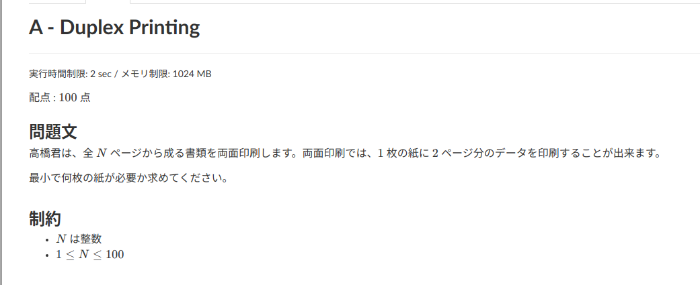
大体の部分はAPG4bで見慣れていると思いますが、「配点」のところだけよくわからないと思うので説明しておきます。 一口に「プログラミングを用いて解く問題」といっても、難易度は様々です。受験でも、誰でも解けるような問題から、上位者でも苦しむような問題まで、幅広く存在したと思います。それと同じことです。 AtCoderにおいては、原則100点刻みで各問題に点数がつけられており、 難しい問題ほど点数が高く なっています。 具体的には、100点や200点は初心者向け、300点は少し慣れた人向け、1000点は化物向け、といった感じです。
それでは、先ほどの問題を解いてみてください。提出方法はAPG4bと同様です。
正解した方、おめでとうございます！このように一つ問題を解くだけであなたのプログラミングへの慣れ、実力は大きく育っています。自信を持ってください！ 今この問題が解けなくても気にすることはありません。 プログラミングをやるのは初めてなのですから誰でも最初はうまく行かないもの。 パ研の先輩はやさしいので、わからないことがあれば積極的に質問してください！
この章の必修課題¶
先程の問題が解けたら、他の問題も解いて練習してみましょう。といってもどの問題を解けばいいのかわからないと思うので、練習にいい問題集を紹介します。
下のリンクをコピーして検索欄に貼り付けたあと、先頭に"h"を1文字追加して、開いて下さい。
ttps://docs.google.com/spreadsheets/d/1rfHCDN08e0nnyQ4NYV_faqN9C5ABIpec6pPdXmX8Y94/edit?usp=sharing
あなた達に解いてほしい問題を選び、リストにしました。かなりの量に圧倒されるかも知れません。
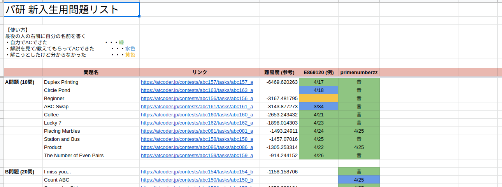
リストの使い方を説明します。
①まず、上の方にあるピンク色の帯に、左向きに詰めて自分のハンドルネームを書いてください。(この写真の場合は「primenumberzz」の一つ右に書く)
②問題は一番上が簡単で、下に行くにつれて難しくなるようになっているので、上から順に問題を解いていきましょう。 問題が解けたらその問題のマスに日付を書き、リスト左上の指示に従ってマスに色をつけてください。解けなかった場合も、取り組んだ証としてマスを黄色くしておきましょう。
あなたが先程解いた練習問題はこの表の一番上の問題なので、さっそく日付を書いておいてください。
③頑張って考えてもわからない問題があれば積極的に先輩に質問しましょう。
④全ての問題をACできたら、次のchapter5に進んで下さい。
これだけの問題をこなすのは大変ですし、他のことをやりたいのにこんなことをやり続けてなんの意味があるんだ、と思うかも知れません。 ですが、初心者のうちはとにかくたくさんのプログラムを書いて慣れるのが大事です。 とても長い期間がかかるとは思いますが、この問題集を解ききればこの先に進む実力は身についたと言えます。 先輩には気軽に質問していいので、がんばっていきましょう。
この中にまだ歯が立たない問題があるのなら、とりあえず他の簡単な問題を解いて慣れていくというのも手です。解く問題の探し方はこのあとの項で解説します。
ここから先の記事は、更に問題を解いて実力をつけたい人、AtCoder Beginners selectionの問題が難しくてまず他の問題で慣れていきたい人向けです。 必要ないと思ったらもう次のchapter5に進んで構いません。
AtCoder Scores¶
先ほどの項で、問題によって点数が違いそれによって難易度が大きく異なることを述べました。 自分に合った問題を探して解かないと、大変なことになりそうですね。 一方で、過去問は過去のそれぞれのコンテストのページに置かれています。 各ページをいちいち覗きながら問題を探すのはかなり無駄な労力になってしまうでしょう。 ここで活躍するのが AtCoder Scores です。とりあえず上のリンクにアクセスしてください。使い方を説明します。
とりあえずページ下の方にスクロールしてください。下画像のようなページが表示されたと思います。
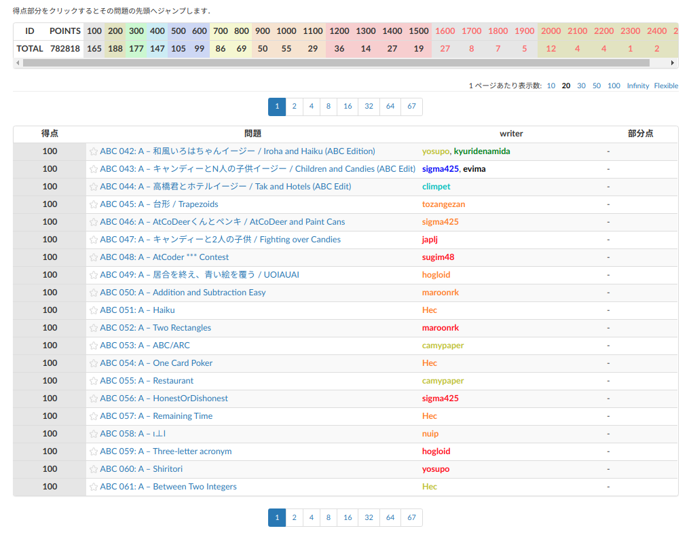
ここには、これまでAtCoderで出された問題の中で点数がついているものが全て、一覧になっています。 そして、点数が低い順に並び替えられています。 これだけで、AtCoderのサイト中に散らばっている問題を探すよりも、随分と楽になります。 それぞれの問題のタイトルをクリックすれば、それぞれの問題のページに行くことができます。
このサイトの機能はこれだけではありません。AtCoder Scoresの画面を少し上にスクロールして、下の画像の部分を見てください。
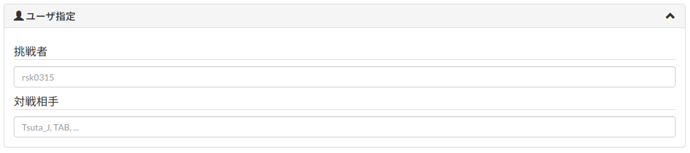
ここでは、先程見た問題一覧に、「この人がこの問題を正解しているか」という情報を追加することができます。 例えば、「挑戦者」の所に誰かのAtCoder IDを入力して、AtCoder Scoresの画面下の方にある「再読み込み」を押せば、下画像のように
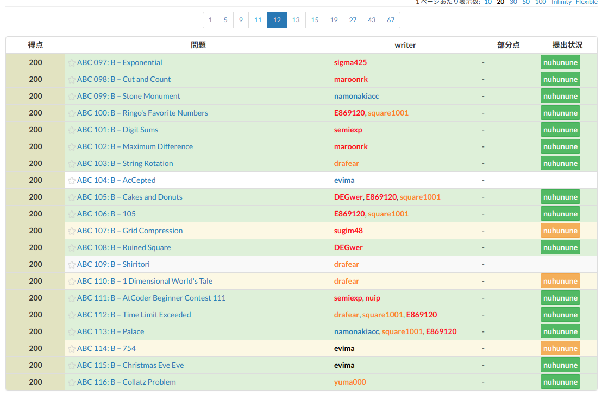
その人が正解している問題の横には緑色、その人が提出しているが正解はできていない問題の横には黄色の目印が表示されます。 新しい問題を解こうと思ってページを開いてみたらもう解いた問題だった、というのは面倒ですから、これで効率が良くなりますね。
さっきは「挑戦者」のところにAtCoder IDを書きました。では、「対戦相手」のところにも別の人のIDを書くとどうなるのでしょうか。下の画像のように書いて、「再読み込み」を押してみます。
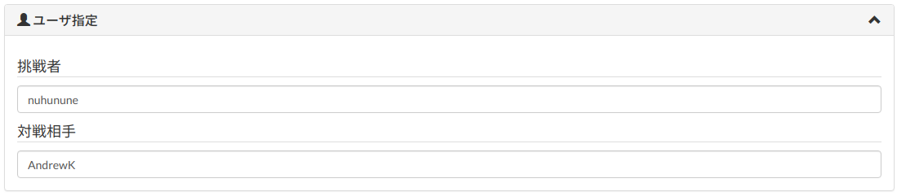
すると、下の画像のように表示されます。
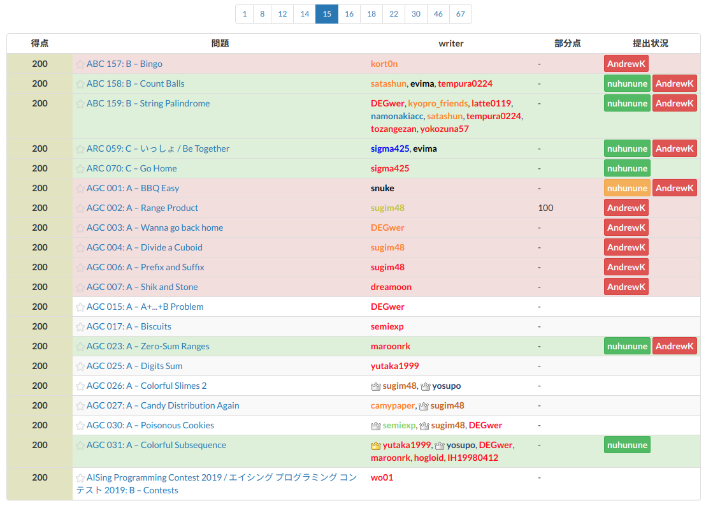
さっきまで表示されていたものに加えて、対戦相手が正解しているものは赤く表示されます。誰かライバルがいて、解いた問題で負けたくないときなど、役に立ちますね。
これまでより更に細かく、表示の設定を変更できます。AtCoder Scoresのうち、下の画像の部分を見てください。
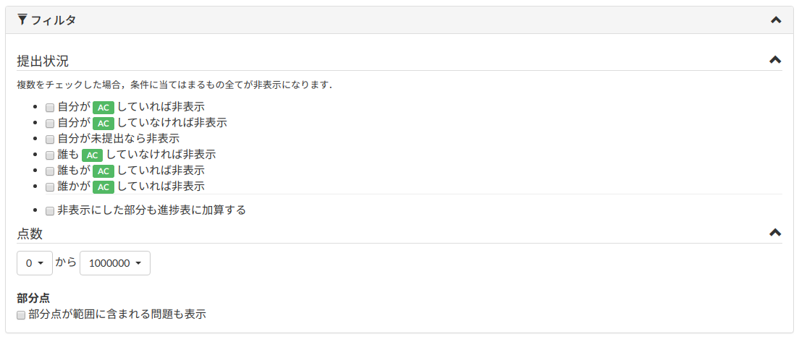
「AC」というのは正解のことです。前の章で聞いたと思います。 大体の設定項目は見たまんまです。わかりにくいところを補足しておくと、「自分が〜」というのは挑戦者のこと、「誰もが〜」というのは挑戦者か対戦相手に含まれる人のことを指します。 これらの設定を使いこなすと、このサイトは更に便利になります。
一つ例を挙げてみましょう。「nuhununeがまだ正解しておらず、AndrewKが正解している100点以上200点以下の問題」の一覧を見たいときは、下の画像のように設定します。
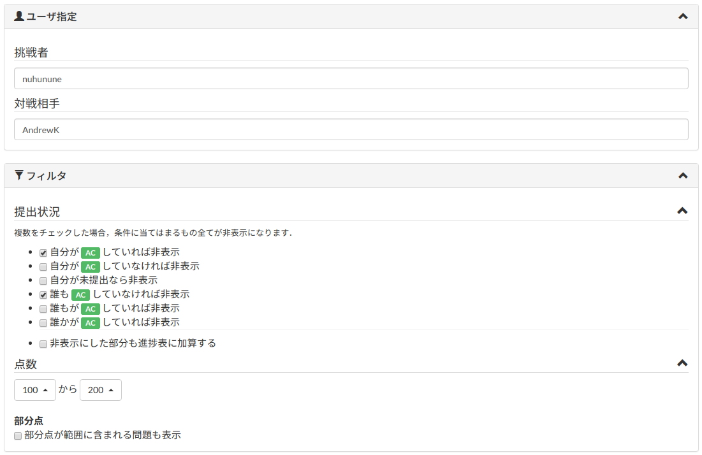
ページの中でまだ説明していない部分がもう一つありました。 一度「リセット」を押してください。 「挑戦者」のところに「nuhunune」と書いて「再読み込み」を押し、ページを下の方にスクロールしてください。 下の画像のようなものが表示されていると思います。
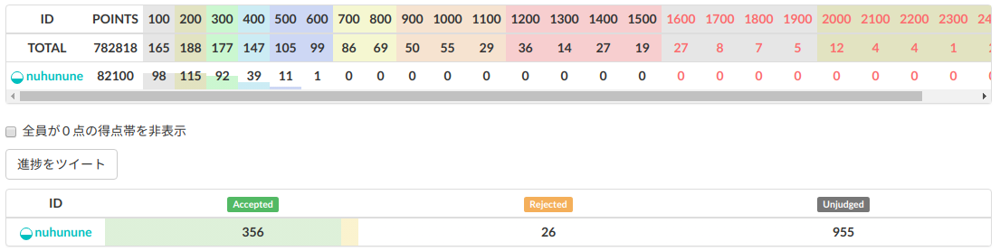
それぞれの点数の問題が何問あるか、その人がそのうち何問といているかがひと目でわかります。「対戦相手」を追加すれば全員の正解数を同時に見られるので、競いたいときにとても便利です。
ここで、競技プログラミング(このページの上の方を参照)をしている人たちにとって大事な概念を教えましょう。 「精進」 というものです。 何事においても、全く苦労せずに高い実力をつけられる人はほとんどいません。ひたすら練習して、強くなっていくものです。 競技プログラミングにおいて、 練習(ひたすら問題を解くこと)を「精進」と呼びます。 どうしても解ける問題が増えないときに先輩に勧められるのは精進、 実力をつけるための一番の近道も精進です。 とても重要なので覚えておきましょう。
AtCoder Problems¶
こちらもAtCoder Scoresと同じく、AtCoderで出された問題を見やすく一覧にしてくれているサイトです。 とりあえず上のリンクを開いてみてください。 下の画像のようなページが表示されるはずです。
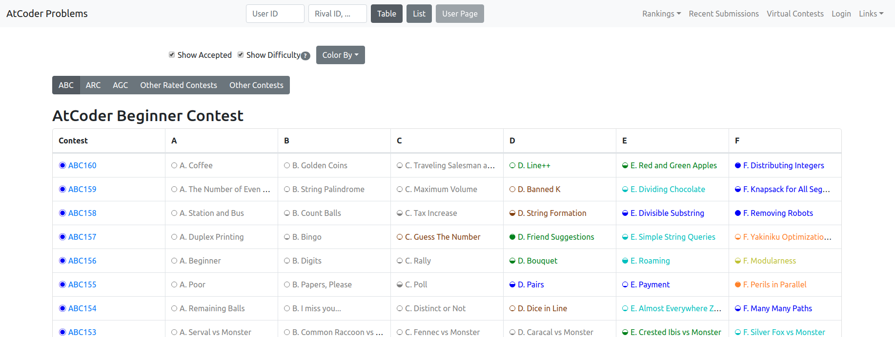
AtCoderでは参加者たちが問題を解いて競う「コンテスト」というものがあり、その過去問を解くことができるということは先程説明しました。 AtCoder Problemsでは、問題の一覧がコンテストの種類ごとに分けられていて、コンテストごとの問題が表になっています。 ここで、User IDの欄に自分のAtCoder IDを入れて、「Table」を押してみましょう。 既に解いている問題の背景が緑色、提出したものの正解できていない問題の背景が黄色に変化します。 (まだ解いた問題が少ないと思うので、変化がわかりにくいかもしれません) どれを解いていてどれを解いていないのか、ひと目でわかるのでとても便利です。
コンテストの種類について軽く説明しておくと、主にABC(AtCoder Beginner Contest)、ARC(AtCoder Regular Contest)、AGC(AtCoder Regular Contest)の三種類があり、 難易度は低い方からABC、ARC、AGCとなっています。 過去問を解くに当たってどの問題をやるかなのですが、
・まだプログラミングに慣れていないならABCのA問題
・AtCoder Beginners Selectionのために問題に慣れたいならABCのA問題からC問題
・かなり慣れてきたらABCのD問題やAGCのA問題
という感じでいいと思います。どのコンテストの問題を表示するかは、下の画像の部分をクリックして切り替えられます。
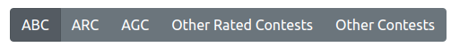
AtCoder Problemsの機能は大きく分けてもう一つあります。「User ID」の所に自分のAtCoder IDを入れて、ページ真ん中上の「User Page」を押してみましょう。 「Achievement」という項目と、いくつかの別項目への切り替えボタンが表示されます。左から順に、主に使うところを説明していきましょう。
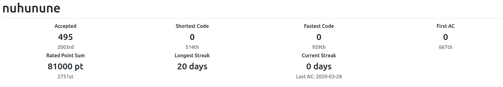
「Achievement」には、よくわからない数字のステータスがたくさん並んでいます。それぞれどういうものか説明すると、
| ステータス名 | 意味 |
|---|---|
| Accepted | これまでに正解した問題の数 |
| Shortest Code | 問題ごとの最短プログラムの保持数 |
| Fastest Code | 問題ごとのもっとも処理速度が速いプログラムの保持数 |
| First AC | 最も早く正解した問題数 |
| Rated Point Sum | これまでに正解した問題の点数の合計 |
| Longest Streak | 「一日も空けずに一問以上解き続ける」ことが最も継続したときの長さ |
| Current Streak | 今日まで何日連続で問題を一つ以上解いているか |
この中でもAcceptedやRated Point Sumを増やすこと、Current Streakを増やし続けることは実力アップに大きくつながります。
精進していることを 自慢 証明したいときにも指標にできるので、とても便利です。
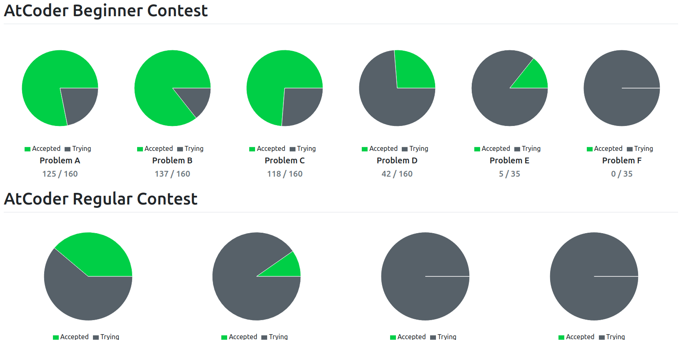
「AtCoder Pie Charts」に書かれているのは、問題の種類ごとの解いた問題数です。ABCのA問題を全て解いてこのメーターを真緑にすることなども、モチベーションにつながりますよ。
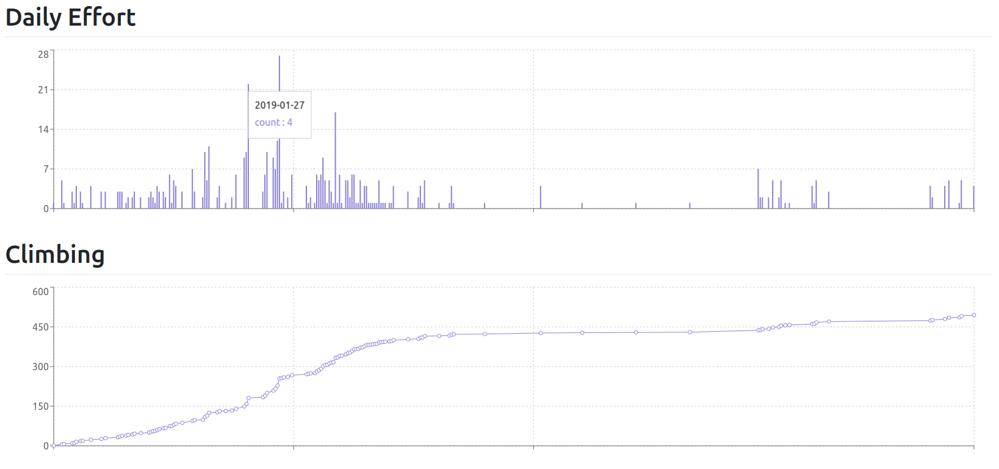
「Progress Charts」に書かれているのは、Daily Effort(日々の努力)です。この画像の人は現在日々の努力が足りていませんが、これは精進の上でとても重要です。この棒グラフが詰まっている人はかっこいいです。
その下の折れ線グラフは、解いた問題数の推移です。Daily Effortの成果はこのグラフに表れます。欠かさず努力をしている人はこのグラフが急なので、これまたかっこいいです。
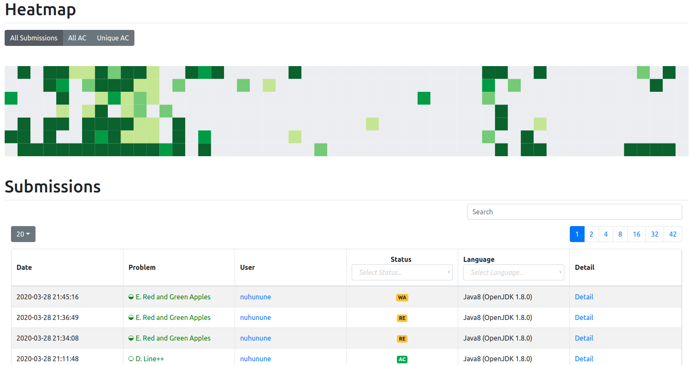
その下にあるよくわからん表には、それぞれの日に自分がどのくらい提出したかが表されています。この表の緑が濃いことは、その人が努力している証です。 その下では自分の最近の提出を確認できるので、最近解いた問題を見直したいときに便利です。
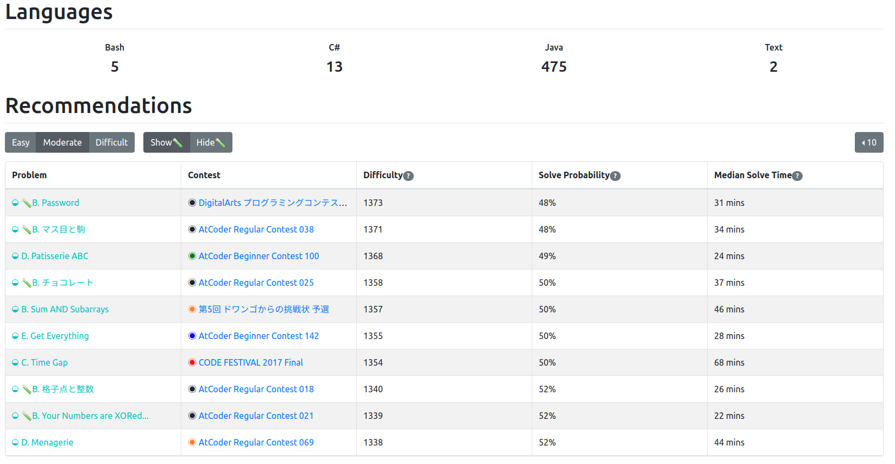
「Recommendation」の表では、自分の実力に応じたおすすめの問題を教えてもらえます。
・自分の実力以下の問題を解きたいときは「Easy」
・自分の実力にちょうどいい問題を解きたいときは「Moderate」
・自分の実力以上の問題にチャレンジしたいときは「Difficult」
を押して、出てきたおすすめの問題を解いてみるのも楽しいです。
その他役に立つサイト¶
これまで紹介したサイトの他にも、学習の役に立つサイトはたくさんあります。いくつか軽くまとめます。
・精進グラフ¶
先程紹介したAtCoder Scoresの一部です。これまで解いた問題の合計点数と、レーティングの推移を同時に見られます。
・AIZU ONLINE JUDGE¶
会津大学が提供している、ネット上で問題を解けるサービスです。 AtCoderに載っていない問題がたくさんあります。 中でも、Courceというところで、学習のためのコースが用意されており、何をすればいいのかわからないときに便利です。 ユーザー登録は、
画面右上の「Register/Setting」→画面右に出てくる「Register/Setting」
もしくは「Guest」→「ユーザー登録」
で出来ます。
・AtCoder-JOI¶
情報オリンピック(後ほど説明します)の過去問が、AtCoderで解けるようになっています。ここでは、それらの問題の解答状況の一覧を表示できます。使い方はAtCoder Problemsと大体同じです。
・Qiita¶
これは、プログラミングに限らず技術者たちが自分の知見を書いてくれているブログです。パ研の活動や競技プログラミングにおいて参考になる記事もとても多いです。 特に競技プログラミング初心者に役立つ情報をまとめてくれている記事がいくつかあるので、ここで紹介しておきます。
これから実力をつけていく上で必要になることがまとまっている記事群です。
・計算量オーダーの求め方を総整理！ 〜 どこから log が出て来るか 〜
競技プログラミングでは、答えを出せればいいというわけではありません。下手なプログラムを書くと、あなたが学校を卒業し、定年退職し、死ぬまで計算が終わらないようなものになってしまうこともあります。 そうならないための「計算量」という考え方が優しく詳しく解説されています。 AtCoderで問題を解いて提出したとき「TLE」という表示が出たなら、この記事を読めば原因がわかるはずです。
・厳選！C++ アルゴリズム実装に使える 25 の STL 機能【前編】
プログラミングにおいて、「ライブラリ」という考え方があります。よ く使うプログラム(二つの数の最大公約数を求めるなど)を予め持っておき、すぐ使えるようにしておく、というものです。(ざっくり) C++では、言語に付属している便利なライブラリがたくさんあります。 その紹介記事です。 これを読めば、あなたのプログラミングもずっと楽になるかも？
この世界には、「蟻本」と呼ばれる競技プログラミングの教科書があります。 パ研にも置いてありとても役に立つのですが、練習用の問題を見つけにくいです。 この記事では蟻本の各章の練習をAtCoderでできるようにおすすめの問題が紹介されています。 蟻本を持っていなくても、アルゴリズムの習得に適した問題が揃っている記事なので、目を通しておくと良いでしょう。